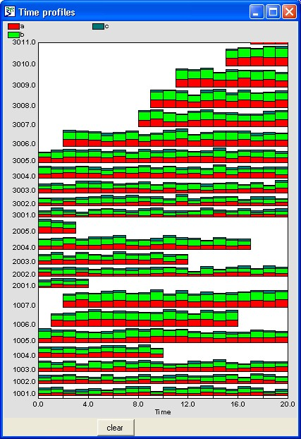

The time profiles helper is designed to show multiple attributes of each instance of a population submodel. Each instance must be assigned a unique identifier, which is plotted sequentially on the y-axis. A stacked bar chart display is used to plot an arbitrary number of properties of that instance against time.
For example, each individual in a population may hold wealth in the form of property, stocks and shares, and cash. The time profiles helper will display the changing wealth of each individual over time (the total height of each bar) as well as the make-up of that wealth (the height of each coloured segment).

For best results, the variables plotted should be scaled to be less than 50. Panning and zooming operations are implemented as for the plotter helper. The y-axis can be panned up or down and the x-axis panned left or right to display different parts of the axis at the same magnification, whilst both axes can also be zoomed in or out to increase or decrease the magnification.
In: Contents >> Running
models >> Working with helpers